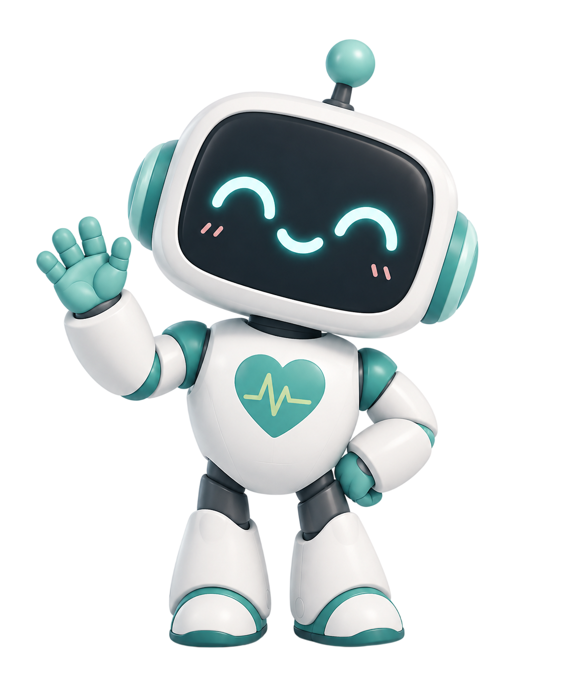
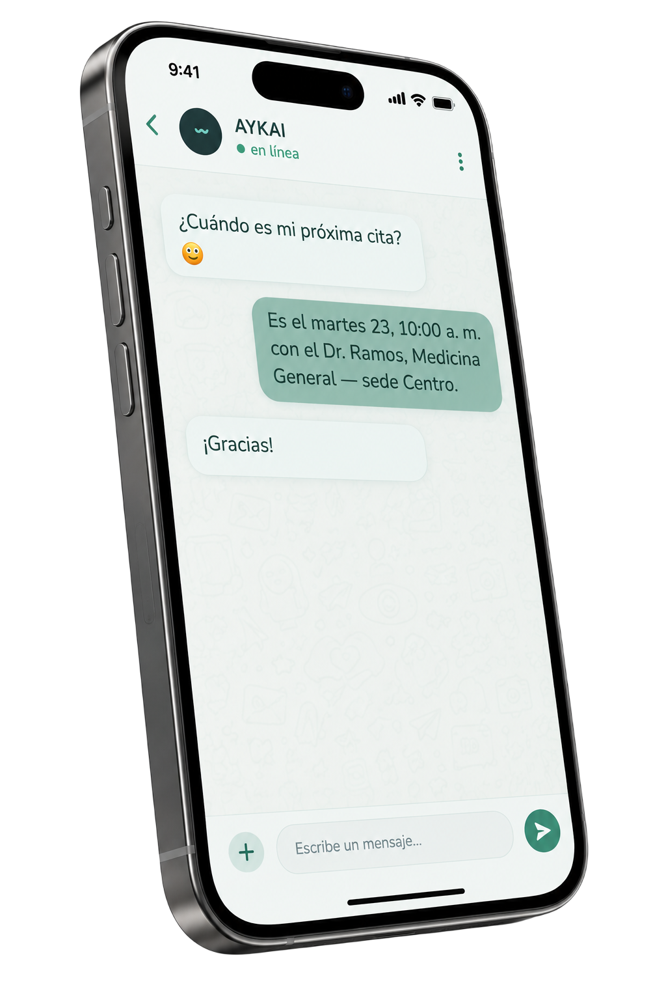
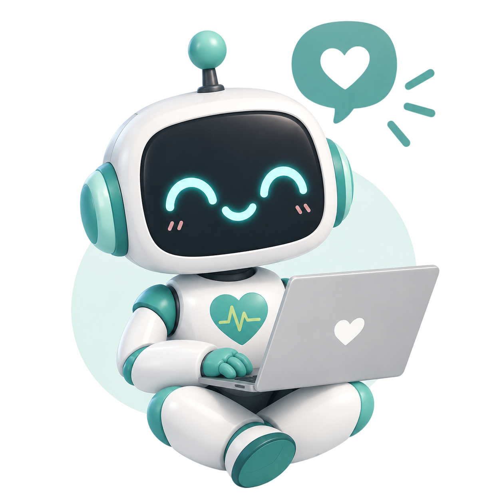
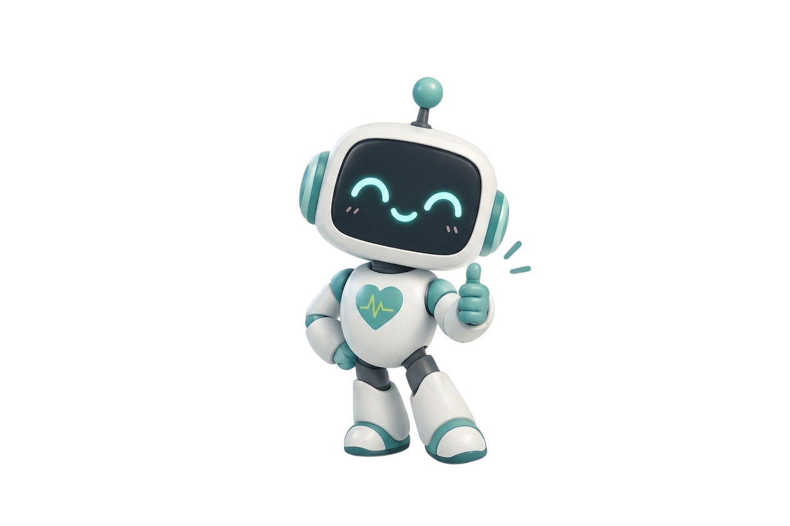

AYKAI atiende a tus pacientes por WhatsApp: agenda y consulta citas, revisa el estado de sus análisis y responde al instante. Sin llamadas que nadie contesta y sin colas.

En el Perú, sacar una cita o saber si tus análisis ya están listos puede volverse un lío: llamadas que nadie contesta, colas largas y trámites lentos. Y quienes más lo sufren son los adultos mayores y los servicios públicos, siempre saturados.
AYKAI nació justo para eso: convertir un trámite tedioso en una conversación simple. Algo que debería ser fácil, por fin lo es — desde el WhatsApp que ya usas todos los días.
No queremos hacer un solo producto. Somos una empresa que crea asistentes de IA (los llamamos “workers”) para cualquier organización que quiera automatizar su atención. La salud es solo el comienzo.
Todo lo que un paciente necesita resolver de su atención, en un mismo chat y en segundos.
Fecha, hora, doctor, especialidad y sede — al toque, sin buscar entre papeles.
Te avisa cuando tus resultados de laboratorio ya están listos para recoger.
Elige día, sede y hora según la disponibilidad real, directo desde el chat.
¿No puedes asistir? Cancela al instante y liberas el cupo para alguien más.
Habla claro y con paciencia, pensado también para los adultos mayores.
Ante un síntoma, siempre recomienda acudir a un médico. Nunca diagnostica ni saca conclusiones.

Sin apps que descargar ni formularios eternos. Si sabes usar WhatsApp, ya sabes usar AYKAI.
Abres el chat de AYKAI como le escribirías a cualquier contacto de tu celular.
Un solo dato para reconocerte y cuidar tu información. Nada de claves complicadas.
Consulta, agenda o cancela en segundos. Listo — sin colas y sin esperas.
El servicio lo contratan los centros de salud. Los beneficios llegan a todos.
Instituciones que quieren automatizar su atención. Reducen llamadas, ahorran trabajo administrativo y evitan citas perdidas.
Sobre todo los adultos mayores, que resuelven sus trámites desde el celular — sin filas, sin llamadas perdidas y sin salir de casa.
AYKAI nació mirando al sector público, el más saturado — pero funciona para cualquier institución que quiera cuidar mejor a su gente.

No hacemos un solo producto: creamos workers de IA a la medida de cada institución. Un worker es un asistente que trabaja por ti, sin descansar.
La mayoría de chatbots apuntan solo a clínicas privadas. Nosotros empezamos por quienes más lo necesitan y menos opciones tienen.
Además del chat, AYKAI tiene un pequeño robot de expresiones cálidas que le da identidad y cercanía a la marca.
Nuestra visión no se queda en una pantalla: exploramos la robótica para transformar procesos y negocios.
Somos un grupo que cree que la tecnología debe acercar la salud, no complicarla. Cada quien aporta lo suyo para que AYKAI funcione de principio a fin.
Escríbele a AYKAI y descubre lo simple que puede ser cuidar a tus pacientes.
Hablar con AYKAI